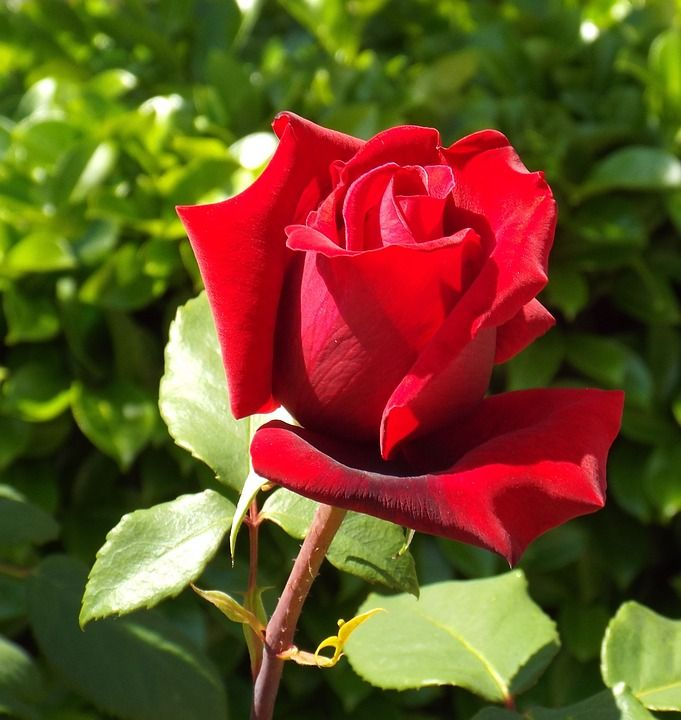
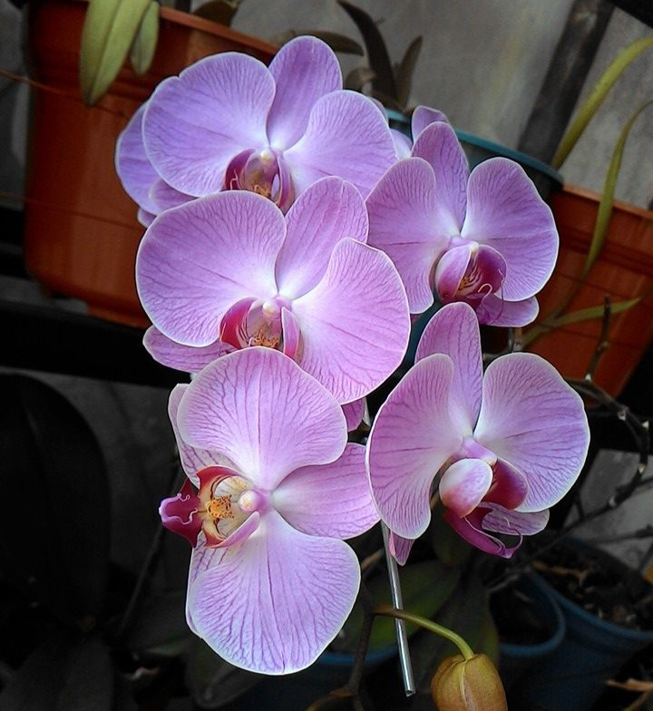
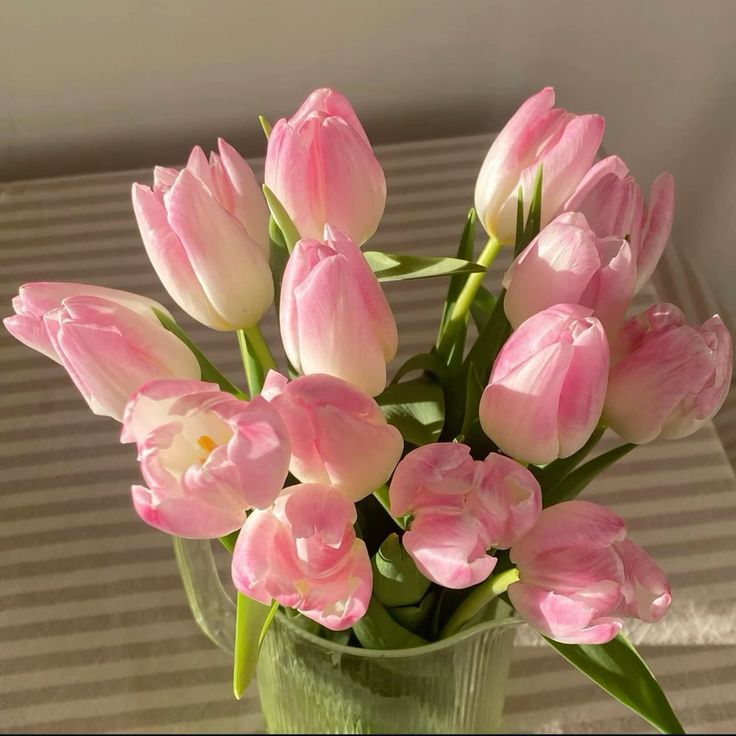
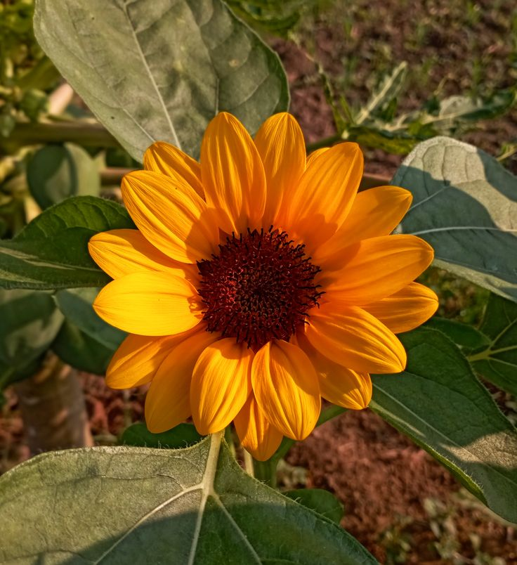

| 1 |
Bunga Mawar |
Bunga mawar adalah bunga indah berkelopak beragam warna yang melambangkan cinta dan keindahan. |
 |
| 2 |
Bunga Melati |
Bunga melati adalah bunga kecil berwarna putih yang harum dan melambangkan kesucian serta ketulusan. |
|
3 |
Bunga Anggrek |
Bunga anggrek adalah bunga eksotis dengan bentuk indah dan warna beragam yang melambangkan keanggunan. |
 |
4 |
Bunga Tulip |
Bunga tulip adalah bunga berkelopak sederhana berwarna cerah yang melambangkan cinta dan keindahan. |
 |
5 |
Bunga Matahari |
Bunga matahari adalah bunga besar berwarna kuning cerah yang selalu mengikuti arah sinar matahari. |
 |